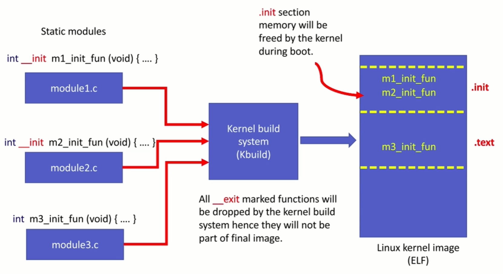
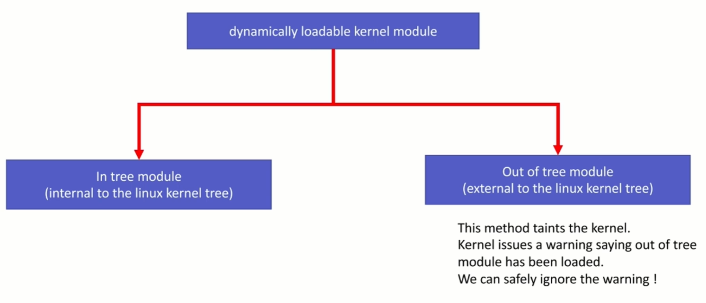

Linux Kernel Module (LKM)
Linux supports dynamic instertion and removal of code from the kernl while the system is up and running. The code what we add and remove at run time is called a kernel module
Once the LKM is loaded into the Linux kernel, you can start using new features and fucntionalities exposed by the kernel module without even restarting the device
LKM dynamically extends the functionality of the kernel by introducing new features to the kernel such as security, device drivers, file system drivers, system call
Support for LKM allows your embedded Linux systems to have only minimal base kernel image (less runtime storage) and optional device drivers and other features are supplied on demand via module insertion
Static(y)
When you build a Linux kernel, you can make your module statically linked to the kernel image (module becomes part of the final Linux kenrel image). This method increases the size of the final Linux kernel image. Since the module is 'built-in' into the Linux kernel image, you can not 'unload' the module. It occupies the memory permanently during run time
Dynamic(m)
When you build a Linux kernel, these modules are NOT build into the final kernel image, and rather there are compiled and linked separately to produce .ko files. You can dynamically load and unload these modules from the kernel using user space programs such as insmod, modprobe, rmmod
Kernel header vs user-space header
Since you write a kernel module that is going to be executed in kernel space, you should be using kernel headers, never include any user space library headers like C std library header files
No user space library is linked to the kernel module, most of the relevant kernel headers live in linux_source_bse/inlcude/linux/
Module initializtion function
Prototype: int fun_name(void);
Must return a value, 0 for success, nonzero means module initialization failed. So the module will not get loaded in the kernel
This is an entry point to your module (like main). This function will get called during boot time in the case of static modules
In the case of dynamic modules, this function will get called during module insertion
These should be one module initialization entry point in the module
Module clean-up function
Prototype: int fun_name(void);
This is an entry point when the module is removed
Since you can not remove static modules, clean-up function will get called only in the case of dynamic modules when it is removed using user space command such as rmmod
If you write a module and you are sure that it will always be statically linked with the kernel, then there is no need to implement this function
Even if your static module has a clean-up function, the kernel build system will remove it during the build if there is an __exit marker
Typically, you must do exact reserse operation what you had done in the module init function, undoing init function
Free memory which are requested in init function
De-init the devices or leave the device in the proper state
__init and __exit macros
__init and __exit makes sense only for static modules (built-in modules)
__init is a macro which will be translated into compiler directive, which instructs the compiler to put the code in .init section of the final ELF of linux kernel image
.init section will be freed from the memory by the kernel during boot time once all the initialization functions get executed
Since the built-in driver cannot be unloaded, its init function will not be called again until the next reboot, that's why there is no need to keep references to its init function anymore
so using __init macro is a technique, when used with a function, the kernel will free the code memory of that function after its execution
Similarly, you can use __initdata with variables that will be dropped after the initialization. __initdata, which works similarly to __init but for init variables rater than functions
You know that for built-in modules clean-up function is not required
So, when you use the __exit macro with a clean-up function, the kernel build system will exclude those functions during the build process itself

Module entry points registration
module_init(my_kernel_module_init);
module_exit(ny_kernel_module_exit);
These are the macros used to register your module's init function and clean-up function with the kernel
Here module_init/module_exit is not a function, but a macro defined in linux/module.h
For example, module_init() will its parameter to the init entry point database of the kernel
module_eixt() will add its parameter to exit entry point database of the kernel
Module descripton
MODULE_LICENSE is macro used by the kernel module to announce its license type
If you a load module whose license parameter is non-GPL(General Public License), then kernel triggers warning of being tained. Its way of kernel letting the users and developers know its non-free license based module
The developer community may ignore the bug reports you submit after loading the proprietary licensed module
The declared module license is also used to decide whether a given module can have access to the small number of "GPL-only" symbols in the kernel
Go to linux/module.h to find out what are the allowed parameters which can be used with this macro to load the module without tainting the kernel
MODULE_INFO(name, "string_value);
You can see the module information by running the below command on the .ko file
arm-linux-gnueabihf-objdump -d -j .modifo file.ko
Building a kernel module
Kernel module can be built in 2 ways
1. Statically linked against the kernel image
2. Dynamically loadable
In most of the exercises in this course we will be writing and using dynamically loadable kernel modules

In-tree and out of tree
Basically, out of tree means outside of the Linux kernel source tree
The module which are already part of the Linux kernel are called in-tree modules. (approved by the kernel developers and maintainers)
When you write a module separately (which is not approved and many by buggy), build and link it against the running kernel, then its called as out of the tree module.
Hence when you load an out of tree kernel module, kernel throws a warning message saying it got tainted.
Modules are built using "kbuild" which is the build system used by the Linux kernel
Modules must use "kbuild" to stay compatible with changes in the build infrastructure and to pick up the right flags to GCC
To build external modules, you must have a prebuilt kernel source available that contains the configuration and header files used in the build
This ensures that as the developer changes the kernel configuration, his custom driver is automatically rebuilt with the correct kernel configuration
Important note
When you are building out of tree (external) module, you need to have a complete and precompiled kernel source tree on your system
There reason is, modules are linked against object files found in the kernel source tree
You can not compile your module against one Linux kernel version and load it into the system, which is running kernel of different version. The module load may not be successful, and even if it is successful, you will encounter run time issues with the symbols
Thumb rule: "Have a precompiled Linux kernel source tree on your machine and build your module against that
Thre are two ways to obtain a prebuilt kernel version
1. Download kernel from your distributor and build it by yourself
2. Install the Linux-headers of the target Linux kernel
Command systax
make -C $KDIR M=$PWD [Targets]
-C $KDIR: The directory where the kernel source is located. "make" will actually change to the specified directory when executing and will change back when finished
M=$PWD: Informs kbuild that an external module is being built. The value given to "M" is the absolute path of the diretory where the external module (kbuild file) is located
[Target]
modules: The default target for external modules. It has the same functionality as if no target was specified
modules_install: Install the external module(s). The default locataion is /lib/modules/kernel_release/extra/, but a prefix may be added with INSTALL_MOD_PATH
clean: Remove all generated files in the module directory only
help: List the available targets for external modules
Creating a local Makefile
In the local makefile you should define a kbuild variable like below
obj-X:= module_name.o
Here obj-X is kbuild variable and "X" takes one of the below values
X = n, Do not compile the module
X = y, Compile the module and link with kernel image
X = m, Compile as dynamically loadable kernel module